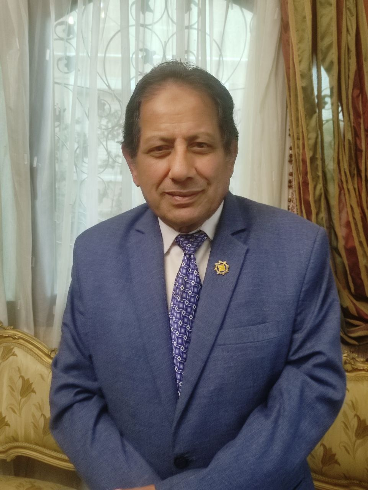
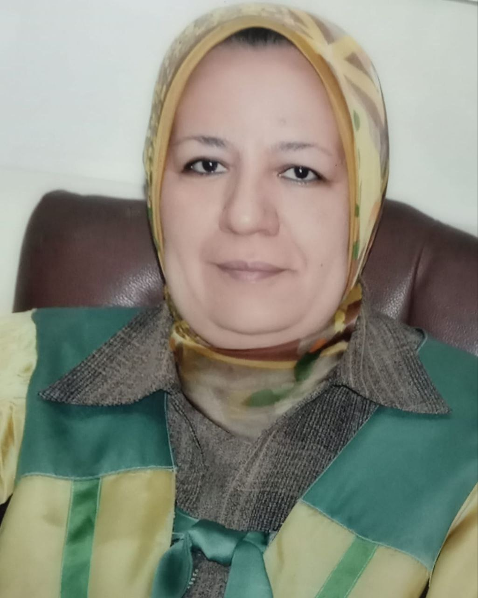

حمادة صلاح: عند اجتماع محافظ البنك المركزي ورئيس مجلس الوزراء ووزير المالية الخير قادم لمصر
- منذ فجر التاريخ، عرفت مصر تقلباتٍ اقتصاديةٍ جمة، فكانت بوابة التجارة بين الشرق والغرب، ومهد الحضارات القديمة. ومرت مصر على مر العصور بتجارب اقتصادية متنوعة، من الازدهار إلى الركود، ومن الاكتفاء الذاتي إلى الاعتماد على الخارج.
- وفي العصر الحديث، واجهت مصر تحدياتٍ اقتصاديةٍ كبيرة، بدءًا من أزمة المديونية في ثمانينيات القرن الماضي، مرورًا بأزماتٍ عالميةٍ هزت اقتصادات الدول العظمى، وصولًا إلى الأزمة الحالية التي تعيشها مصر منذ عام 2011 وحتي عام 2016 الذي تم تحرير سعر الصرف فية بشكلٍ شبه كامل، حيث تم السماح للجنيه المصري بالتغير بحرية في سوق العملات الأجنبية مرورا بمارس 2023 الذي خفض البنك المركزي المصري قيمة الجنيه المصري بنسبة 14% مقابل الدولار الأمريكي.
- هناك العديد من التساؤلات من أهمها لماذا كل هذة المحاولات المستميتة لتحرير سعر الصرف اكثر من مرة وما هي الظروف المؤثرة في هذة المحاولات التي اثرت بنفسها علي الازمة الاقصادية وما الفرق بين محاولات البنك المركزي في تحرير سعر الصرف لان عن السنين السابقة كل هذا وأكثر سوف نتكلم عنه بالتفصيل مع الاستاذ الدكتور حمادة صلاح صالح خبير أقتصادي في البنك المركزي وعضو المجلس المصري لشون القانونية.
- صرح الدكتور حمادة بأن هناك الكثير من الناس لا يعلمون ما معني تحرير سعر الصرف (التعويم) وهو عبارة نظام يسمح لقيمة العملة الوطنية بالتغير بحرية في سوق العملات الأجنبية، بناءً على العرض والطلب. بعبارة أخرى، لا تتدخل الحكومة أو البنك المركزي بشكل مباشر في تحديد سعر العملة، بل يحدده تفاعل قوى السوق.
- وهذا ينقلنا الي السؤال المهم وهو لماذا كل هذة المحاولات المستميتة لتحرير سعر الصرف اكثر من مرة ولماذا وما هي الظروف المؤثرة في هذة المحاولات التي اثرت بنفسها علي الازمة الاقصادية وجاوب الدكتورعلي هذا السؤال: كل محافظ بنك مركزي كان لدية روية مختلفة عن الاخر في اخر 10 سنوات وكانت الظروف السياسية مختلفة وكانت لها اليدي العليا في تلك الفترة حيث في 2011 وبسبب الظروف السياسية خرج من الدولة 18 مليار دولار وكانت هذة هي بداية الازمة حيث كانت عقود الاستثمار أكبر من ان تتحملها الدولة مع محاولات المحافظ قي الحفاظ علي العلاقات بين مصر ودول المستثمرة قرر أن يتخلي علي 18 مليار دولار في محاولة أصلاحية خوفا من وقوع مصر في مخاطر أكبر.
- أما في 2016 وبسبب توتر العلاقات الدولية والتصاعد الازمة الاقتصادية حتي أصبحت عالمية ورفع الفدرالي الامريكي سعر الفائدة وبسبب الاموال الساخنة التي خرجت من الدولة كان لابد من عمل تحرير لسعر الصرف لتثبيت سعر الجنية من خلال شراء الذهب وعمل غطاء ذهبي اؤ اخذ قروض وعمل غطاء دولاري وبسبب تلك الظروف كان يجب علي محافظ البنك المركزي أن يأخذ القرار الصعب وهو تحرير سعر الصرف.
- لكن في مارس 2023 وبعد ازمة كرونا والحرب الروسية الاكرانية وزيادة الفدرالي للفيدة ووجود سوق موازية للدولة كان يجب علي البنك المركزي يحرر سعر الصرف لكن المختلف في تحرير سعر الصرف عن باقي المحاولات السابقة أن البنك المركزي المصري كان علية أن يغير في سياسانه والتعلم من أحطاءه واشلاء الماضي فعمل علي أجرءات جديدة وهي ترشيد الاستهلاك وزيادة الاستثمارات في الدولة ووضع معايير جديدة للتعامل واليات الصرف والعقود لتوفير الغطاء الدولاري عند التعويم وكل هذا لمحاربة السوق السوداء ولم تتوقف أجرءات البنك المركزي هنا بل اتجه لتطبيق سياسة الارهاب وعمل كماين لتجار السوق السوداء المتحفظين علي الدولار داخل الدولة ثم عمل تصالح مع باقي التجار من خلال امكانية فتح حساب دولاري دون السؤال عن مصدر هذة الدولارات.
- كما أشاد الدكتور حمادة بدورالبنك المركزي في حل مشكلة هي الاجدد والاكثر جدلا حاليا وهي مشكلة الاجئين الذي تضاعف عددهم في مصر في السنوات الاخيرة ويقدر عددعم الان 10 ملايين لاجئ بسبب الازمات الاقتصادية والحروب وغيرها من المشاكل وفي أجتماع عقده محافظ البنك المركزي اكد في هذا الاجتماع علي فرض ضريبة علي الاجئين تقدر ب 2000 دولار واكد الدكتور حمادة علي ان هذا القرار سوف يصبح هو بديل ازمة السياحة في الشهور القادمة.
- شدد أيضا علي أن لا يمكن التهرب من الضريبة حيث أن لم يتم تجديد الاقامة دون دفع الضريبة وان كل لاجئ في مصر بيتم عدهم بأستخدام الخدمات الالكترونية التي تقدمة مصر للاجئين فمن المستحيل التهرب من تلك الضريبة.
- كل هذة الاجراءات توكد من وجود حطة ورؤية لدي محافظ البنك المركزي أو من الدولة بشكل عام وان مصر لم تكرر أحطاء الماضي لكن هل تحرير سعر الصرف الان لة اجابيات أم كل ما نعرفة عن تحرير سعر الصرف هي السلبيات فقط ويعتبر هذا من أهم الاسئلة ولو لم يكن الاهم علي الساحة الان غير وجود أرتفاع في الاسعار حتي بعد تحرير سعر الصرف كل هذة التساؤلات سوف يجاوب عليها الاستاذ الدكتور رامي الجالي خبير أقتصادي ومدرس مساعد تمويل وأستثمار وعضو مجلس أمناء الحوار الوطني:
- الذي صرح بوجود العديد من الايجابيات لتحرير سعر الصرف الان واولها أستقرار وتحسن في أدء العملة أو سعر الصرف بشكل عام من ما سيترتب علية زيادة الاستثمارات الاجنبية في الدولة ورجوع وأنتعاش الساحة مرة اخري وزيادة تحويلات المصريين في الخارج غير مع وجود هذا الأستقرار في سعر العملة سيعطي فرصة للدولة لحل مشكلة الاستيراد وتكدس البضائع في المواني المصرية ورجوع توفر الاحتياجات الاساسية المواد الغذائية غيرها من المواد الاستهلاكية في السوق المصري.
- أما عن السلبيات أكد الجالي علي حتمية وجود سلبيات لتحرير سعر الصرف وأهمها ازتفاع وغلاء الاسعار وهذا بسبب أن معظم السلعة الاساسية في الاساس سلع مستوردة وان لم تكن مستوردة ومصنعة فهي مصنعة بعناصر أنتاج مستوردة وهذا ما سيترتب علية تاثير علي دخل الفرض وزيادة نسبة محدود الدخل غير زيادة معدلات البطالة والتأثير علي التضاخم بشكل عام.
- أضاف الجالي أيضا معلقا علي أرتفاع الاسعار حتي بعد نزول سعر الجنية في السوق السوداء أن الاسواق تستجيب لارتفاع الاسعار بشكل سريع جدا العكس في الانخفاض بيكون هناك بطئ بسبب عدم دقة سلاسل الامداد بسبب النزول السريع في الاسعار والحل هو الانتظار الي حتي اعادت ضبط اسعار السلع والبضائع بالسعر الجديد من ما يتطلب رقابة مستمرة من الحكومة علي السوق.
- كما ذكر الجالي دور المهم الذي يلعبه الحوار الوطني في مناقشة المشاكل ولازمة الاقتصادية الذي تم تقسيمه الي أكثر من جلسة واكد علي مناقشة واجاد حلول وبدائل للتمويل وعدم الاعتماد علي القروض فقط غير أجاد حلول لمشاكل عديدة مثل التضخم وغلاء الاسعار مناقشة ومتابعة المشاريع الاقتصادية والاستثمارية في الدولة ومن أهم تلك الجلسات هي جلست الاستثمار الذي مناقشة فيها الجهات والهيئات المطروحة للبيع وكيفية أعادة تطوير بنك الاستثمار القومي.
- ختم الجالي قائلا أذا هناك مخرج لمصر من الازمة الاقصادية فهي من خلال الحوار الاقتصادي الذي دعي الية السيد الرئيس عبد الفتاح السيسي.
- وفي النهاية هل يوجد حل شافي من كل تلك الازمات والمشاكل في حقيقة هناك حل الذي ناقشته الاستاذة الدكتورة عبير فرحات أستاذة الاقتصاد في جامعة عيش شمس: موكدة أن الحل الوحيد للمشكلة هي زيادة الاعتماد علي الإنتاج المحلي مع زيادة عرض العملة الأجنبية من خلال جذب الاستثمارات الأجنبية وتجنب الاموال الساخنة والعمل علي التخلص من التبعية للدولار من خلال الاتفاقات التي تضمن أصر عقد صفقاتها التجارية بالعملات المحلية.